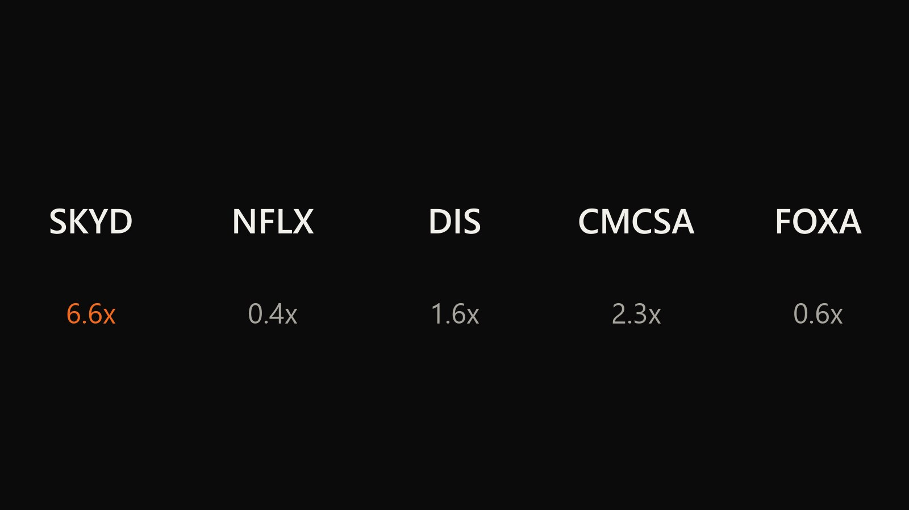
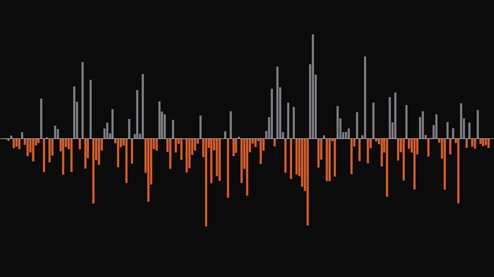
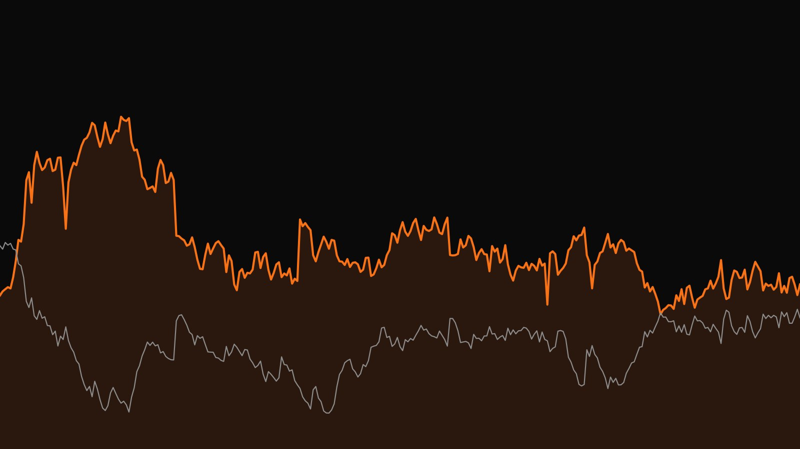
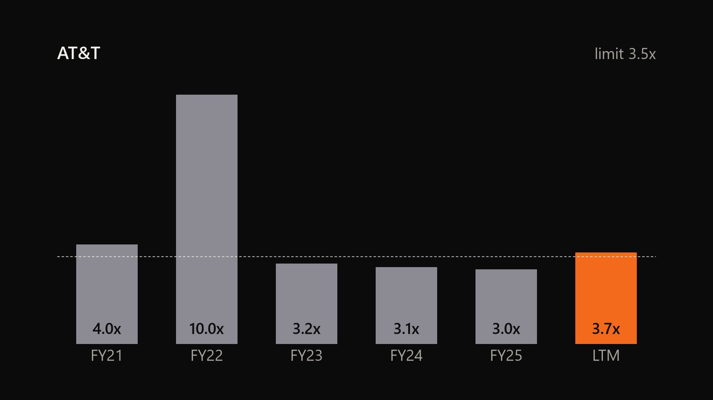

Work.
The parts of a credit, syndicate and DCM job I can do with public data, and the roles behind them.
Projects
- Media DCF models and credit compsFive media companies on one template, compared as credits.

6.6xSkydance net leverageOpen - Green bond pricingDo green bonds price tighter at issue? 153 matched pairs.

2.4 bpsaverage gap, not significantOpen - Tender TrackerA daily tracker of bond tender and exchange offers.
 9 in 10types and dates right on unseen filingsOpen
9 in 10types and dates right on unseen filingsOpen - Morning Market DashboardIs the new issue window open? One score, every morning.
 7 inputsfrom VIX to the 10 yearOpen
7 inputsfrom VIX to the 10 yearOpen - Fed Liquidity LabDoes Fed liquidity tell you when to own less? I tested it.

6.0%a year, against 8.1% for buy and holdOpen - Credit Research ToolkitSpreads an issuer from SEC filings and flags what changed.

$159.6bnAT&T debt, matched to its releaseOpen
Roles
- FinsightOrder books on 15 to 20 new deals a day.25+liability management headlinesOpen
- Bloomberg at UMass LowellTerminal Assistant, and captain of the UML trading team.$1Mvirtual book, long onlyOpen
- Commonwealth Capital ResearchRates and credit newsletter for 200 subscribers.
 Open
Open - Mill City ConsultingDue diligence for a 1931 duckpin alley.
 Open
Open